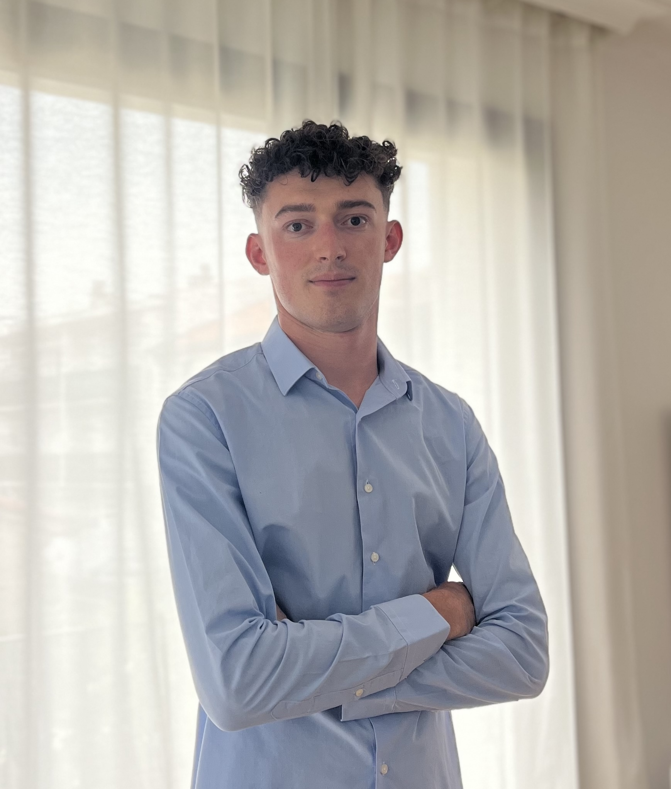

Hi, I'm Octave Faliès--Lagarrigue.
General Engineering Student at École Centrale de Lyon.
Highly motivated, curious, and passionate about innovative projects and technical challenges. I have a strong interest in mechanical design and motorsport.
- 📍 Lyon / Toulouse, France
- ✉️ octave.falies-lagarrigue@etu.ec-lyon.fr
- 📞 +33 7 69 83 17 03
- 🔗 LinkedIn Profile
Education
General Engineering Degree
2025 - Present | École Centrale de Lyon
First-year student in a highly selective multidisciplinary engineering program.
Intensive Preparatory Classes
2023 - 2025 | Lycée Pierre de Fermat (Toulouse)
Two-year intensive preparation in Mathematics and Physics for the highly competitive national engineering school entrance exams.
High School Diploma (Baccalauréat)
Graduated in 2023 | Lycée le Ferradou
Graduated with Highest Honors (Mention Très Bien avec félicitations du jury).